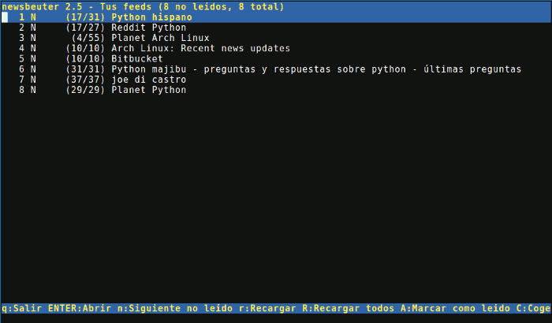
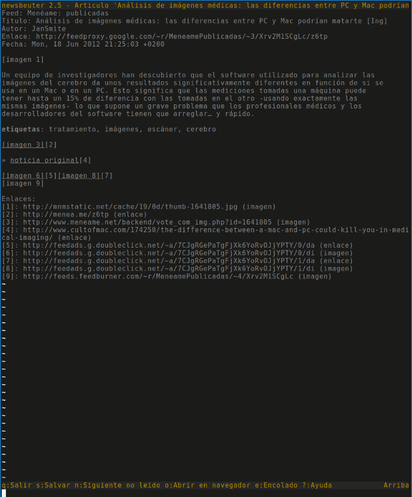

Uno de los pilares de la productividad es, como no, la gestión del tiempo. Otro de los pilares fundamentales es, inexorablemente, el conocimiento. Si pierdes el tiempo en tareas irrelevantes (o directamente procrastinando), tu productividad se resiente irremediablemente. Si no tiene los conocimientos adecuados y suficientes, consumes el tiempo aprendiendo a hacerlo o directamente lo pierdes haciéndolo mal. Hoy en día, rara es la actividad donde la formación continua no sea un requisito indispensable, no ya para mejorar o mantener tu rendimiento, si no simplemente para poder seguir ejerciéndola.
Por lo tanto nos vemos condenados a intentar mantenernos al día (y ampliar conocimientos), mientras que procuramos dedicarle el menor tiempo posible para no menoscabar nuestro rendimiento. Tal delicado equilibrio no es poca hazaña en nuestros días. Nos vemos inundados de tal cantidad de información, que el filtrado es la única manera de intentar sobrevivir a esa enorme vorágine de datos a la que nos enfrentamos. Afortunadamente tenemos herramientas. Desde hace muchos años he confiado esta tarea a emplear fuentes RSS de calidad y una buena herramienta para gestionarlas.
Mi búsqueda del cliente RSS ideal
He empleado muchas herramientas distintas para esta tarea, siempre intentando tener la más idónea para filtrar muchas fuentes RSS en el menor tiempo posible, sin pasar por alto lo que me interesa conocer. Algunas muy buenas, que usaba cuando aún empleaba Windows como SO principal, ya no existen. En Linux he pasado por las más conocidas (en orden cronológico):
-
Liferea, era muy buena cuando la deje, lo de mostrar los comentarios en las entradas es algo que no he vuelto a ver en ninguna otra herramienta. Pero después de varios años de uso, la abandoné cuando se había convertido en insufriblemente lenta.
-
Akregator, no era para mí, nunca acabe encontrándome a gusto con ella. Lo hacía todo medianamente bien, pero no destacaba en nada, pronto la abandoné.
-
Blogbride, su planteamiento es diferente al resto. Es una buena aplicación y estuve con ella muchos meses. Pero siempre seguí buscando algo más eficiente.
-
RSSOwl, la mejor aplicación para leer RSS para escritorio que he conocido. La he usado durante años. Está construida sobre Eclipse. Ofrece muchas posibilidades de personalización y filtrado. Es muy rápida, pero debido a que depende de Eclipse y java, si manejas un número considerable de fuentes (+1000 en aquella época), se puede volver un poco pesada. Además, si como yo, dejabas muchos artículos para leer en otro momento, la base de datos crecía de tal manera, que podía llegar a ser muy lenta. La abandoné buscando algo aún más ágil y productivo.
-
Google Reader, decidí darle una oportunidad. Por aquella época había empezado a usar Read it Later (hoy Pocket) para guardar aquello que quería leer en otro momento o con más calma. La integración con RIL me obligaba a abandonar el teclado y usar el ratón. Además el rediseño que hizo Google no me convencía. Decidí buscar algo aún más rápido y eficiente.
Durante todo ese tiempo probé muchísimas otras alternativas (incluidos complementos para navegadores web) y no encontraba nada que me valiese. Es muy difícil encontrar una aplicación de este tipo que te permita manejar un gran número de fuentes RSS de forma realmente eficiente. Al final ya estaba decidido a regresar a RSSOwl. Pero acostumbrado a Pentadactyl y Vim y las aplicaciones ncurses, decidí buscar algo en esa línea, y lo encontré.
Newsbeuter
Newsbeuter es un juego de palabras con la palabra alemana "Wildbeuter" que significa cazador-recolector, por lo que Newsbeuter vendría a ser algo así como Cazador/Recolector de Noticias. Newsbeuter es una aplicación para leer fuentes RSS y Atom que utiliza una interfaz tipo ncurses para consola. Quién esté familiarizado con el cliente de correo Mutt se sentirá cómodo enseguida, ya que se inspira en este. Está programado en C++ y dado que funciona en modo texto, una de sus ventajas es la enorme agilidad que proporciona para moverse entre fuentes y noticias.
Un resumen de sus características:
- Permite suscribirnos a fuentes RSS y Atom
- Soporta OPML tanto para importar como para exportar las subscripciones
- Descarga de podcasts
- Se pueden configurar todos los atajos de teclado libremente
- Podemos realizar búsquedas entre todos los artículos descargados. Similar a Vim
- Es posible crear etiquetas para dividir nuestras subscripciones en categorías y realizar filtrados y búsquedas en función a ellas
- Se pueden sincronizar las fuentes con Google Reader y Tiny Tiny RSS
- Podemos configurar el color y las cadenas de texto para personalizar su aspecto
- Se pueden eliminar de forma automática artículos que no deseemos a través de un "killfile"
- Es posible integrar cualquier fuente de datos a través de un flexible sistema de filtros y plugins: Fichero con urls, fichero OPML, fichero OPML online, Google Reader, varios ficheros...
- Se pueden crear "meta fuentes" empleando un potente lenguaje de consultas
- Permite crear marcadores a partir de cualquier enlace del articulo empleando una aplicación externa o un script
- Permite guardar artículos en texto plano
- Podemos otorgar etiquetas de un solo carácter que el autor denomina "flags" por articulo y varias por articulo. Útiles para emplearlas conjuntamente con los filtros
- Se pueden definir macros
- Linea de comandos para poder ejecutar comandos y cambiar opciones sobre la marcha
- Funciona en Linux, Mac OS y FreeBSD
- Programado en C++ y guarda los artículos en una BDD SQLite
- Documentación bastante completa
Pantalla con la configuración por defecto de Newsbeuter

Lo que lo distingue
Muchas de estas características las comparte con otras aplicaciones de las mencionadas antes, pero lo que realmente distingue a Newsbeuter de todas ellas es lo siguiente:
- Totalmente controlable desde el teclado, lo que unido a su velocidad, le proporciona una agilidad inigualable.
- Basado en texto, lo que nos evita distraernos de lo importante, el contenido.
- Consumo ridículo de memoria y recursos comparado con cualquiera aplicación mencionada antes. En el peor de los casos, me ha consumido unos 30 MiB de RAM (para la versión de 64 bits)
- Se puede configurar el números de hilos de proceso para descargar noticias. En mi caso, con 8 hilos, tarda unos 40s en leer unos 250 canales RSS. Solo Google Reader por su funcionamiento, puede mejorar esto.
- Configurable con un fichero de texto plano
Como dijo Zed Shaw y refrenda el autor de la aplicación, Andreas Krennmair,
"Newsbeuter es el Mutt de los lectores de noticias RSS"
Desde mi propia experiencia puedo decir que este programa ha cambiado mi forma de leer las noticias del día. Antes, para mi, era muy importante que el lector de noticias que empleara, utilizara un estilo homogéneo entre todas las fuentes y artículos, con el fin de centrarme en el contenido y no perder el tiempo con nimiedades. Es algo más importante de lo que pueda parecer a simple vista, cuando quieres emplear el menor tiempo posible en adquirir la información y al mismo tiempo quieres asimilar lo que lees. Si cuando vas a leer las noticias tienes 45 minutos y 300 artículos sin leer, el cambiar de un articulo con fondo negro y letra Sans Serif mediana a uno con fondo blanco y letra Serif enorme, te supone una distracción y una adaptación de la vista innecesarias e incomodas.
Vista de un articulo con mi configuración

Pero al comenzar a emplear Newsbeuter me di enseguida cuenta de algo, el carecer
por completo de imágenes y compartir cabecera entre todos los artículos, me ha
servido para pasar por alto o leer en diagonal aquello que menos me interesa. No
solo filtro más rápido, si no que lo hago más eficientemente. Evidentemente hay
artículos en los que las imágenes complementan necesariamente al articulo. En
estos casos o bien la abro directamente en el navegador (tan sencillo como
pulsar o ) o bien puedo abrir las imágenes de forma independiente en el
mismo si me interesa por ejemplo ver solo una. En este sentido, Newsbeuter
proporciona una lista de todas las Urls presentes en el articulo en forma de
lista al final del mismo, pudiendo abrir cualquiera de ellas introduciendo el
indice de la misma. De hecho, empleando el comando u podemos acceder a la
lista completa de las mimas en una nueva ventana.
Mi configuración
Mi configuración no tiene demasiado de especial, quizás que emplea una combinación de colores distinta a la habitual y que empleo un par de scripts para las notificaciones y para crear marcadores. Esta se puede encontrar en mi repositorio de mis dotfiles en GitHub
Notificaciones
Para las notificaciones que emite Newsbeuter después de refrescar las noticias
empleo el script notify.py que comentaba en este articulo
ligeramente modificado para trabajar con Newsbeuter. En la imagen se puede ver
una notificación del programa.
try: import os import sys import gtk import pynotify import textwrap NOT_NOTIFY = False except ImportError: NOT_NOTIFY = True def notify(title, msg, icon=None, wrap=None): """Send notification icon messages through libnotify. Parameters: (str) title -- The notification title (str) msg -- The message to display into notification (str / uri) icon -- Type of icon (ok|info|error|warm|ask|sync) or icon file """ if NOT_NOTIFY: return if not pynotify.is_initted(): pynotify.init(title) gtk_icon = {'ok': gtk.STOCK_YES, 'info': gtk.STOCK_DIALOG_INFO, 'error': gtk.STOCK_DIALOG_ERROR, 'warm': gtk.STOCK_DIALOG_WARNING, 'ask': gtk.STOCK_DIALOG_QUESTION, 'sync': gtk.STOCK_JUMP_TO} if wrap: msg = os.linesep.join(textwrap.wrap(msg, wrap)) try: note = pynotify.Notification(title, msg) helper = gtk.Button() gtk_icon = helper.render_icon(gtk_icon[icon], gtk.ICON_SIZE_BUTTON) note.set_icon_from_pixbuf(gtk_icon) except KeyError: note = pynotify.Notification(title, msg, icon) note.show() def main(): """Main section""" notify('Newsbeuter', sys.argv[1], '/home/joedicastro/.newsbeuter/icon.png') if __name__ == "__main__": main()
Integración con Pocket
Utilizo Pocket como nexo de unión entre el navegador y el Newsbeuter para archivar todos aquello artículos que me interesa leer, pero que quiero dejar para otro momento más idóneo. Hubo un tiempo en que empleaba Delicious para esta tarea, pero me parece más adecuado Pocket.
Esto lo consigo empleando el comando para crear marcadores de Newsbeuter y un script en Python creado para ello. Esta es la parte del archivo de configuración que relaciona el comando con el script:
bookmark-cmd "~/.newsbeuter/send2ril.py"
El script hace uso de la API Python para Read it Later (como se llamaba
anteriormente Pocket) para guardar la url del articulo en mi cuenta de Pocket.
Así pulsando Ctrl + b se guarda el marcador en Pocket.
#!/usr/bin/env python # -*- coding: utf8 -*- """ send2ril.py: Send a new url to Read it Later """ __author__ = "joe di castro <joe@joedicastro.com>" __license__ = "GNU General Public License version 3" __date__ = "18/06/2012" __version__ = "0.1" import sys import readitlater import ril_config as config def main(): """Main section""" api = readitlater.API(config.RIL_APIKEY, config.RIL_USERNAME, config.RIL_PASSWORD) new = [{"url":sys.argv[1], "title":sys.argv[2]}] api.send(new=new) if __name__ == "__main__": main()
En el script se importa un modulo, ril_config, que es el que contiene las
claves de mi cuenta de Pocket, este modulo sería algo similar a esto
(evidentemente los valores son falsos):
# ril credentials RIL_APIKEY = '987u1ksjsdfRk54kKLKL34jkjij9945k' RIL_USERNAME = 'usuario' RIL_PASSWORD = 'ADRKSD-Xk3kj5kjljFl'
Por lo tanto para hacerlo funcionar necesitamos crear un fichero ril_config.py
con las credenciales de cada uno para Pocket. Los campos RIL_USERNAME y
RIL_PASSWORD se corresponden evidentemente con el usuario y la contraseña que
tengamos para el servicio. El otro campo, RIL_APIKEY es una clave que podemos
obtener en esta página para registrar nuestra aplicación (en este caso
nuestro script) y que pueda acceder de forma autorizada a la API de Pocket.
Copia de seguridad de las urls de Pocket
Del mismo modo, aprovechando la misma API que empleo en el anterior script, he creado otro script que ejecuto regularmente con cron, que me guarda una copia en mi disco duro con todas las urls que tengo guardadas en Pocket. Vamos, una copia de seguridad, uno nunca sabe cuando este tipo de servicios pueden dejar de funcionar. Estas direcciones las guardo en un fichero con formato Org-mode
#!/usr/bin/env python # -*- coding: utf8 -*- """ get.py: Get the urls stored in Read it Later & save them in a Org-mode file """ __author__ = "joe di castro <joe@joedicastro.com>" __license__ = "GNU General Public License version 3" __date__ = "18/06/2012" __version__ = "0.1" try: import sys import os import readitlater import ril_config as config except ImportError: # Checks the installation of the necessary python modules print((os.linesep * 2).join(["An error found importing one module:", str(sys.exc_info()[1]), "You need to install it", "Stopping..."])) sys.exit(-2) import os def main(): """Main section""" api = readitlater.API(config.RIL_APIKEY, config.RIL_USERNAME, config.RIL_PASSWORD) items = api.get(state="unread") lista = items["list"] with open("ril_urls.org", "w") as output: output.write("* Read It Later URLs" + os.linesep) for i, k in lista.items(): output.write("** {0}{1}".format(k['title'].encode("utf8"), os.linesep)) output.write(" [[{0}][Enlace]]{1}{1}".format(k['url']. encode("utf8"), os.linesep)) if __name__ == "__main__": main()
Conclusión
Newsbeuter no es para todo el mundo, por supuesto, la gran mayoría considerarían decimonónico el emplear un interfaz de texto en vez de uno gráfico. Muchos incluso llamarían herejía a usar el teclado en vez de el ratón (aunque luego se vuelvan locos con las pantallas táctiles). Lo respeto y lo entiendo, pero para aquellos que aman su tiempo y no están dispuestos a desperdiciarlo, deberían darle una oportunidad a esta aplicación.
Comentarios !